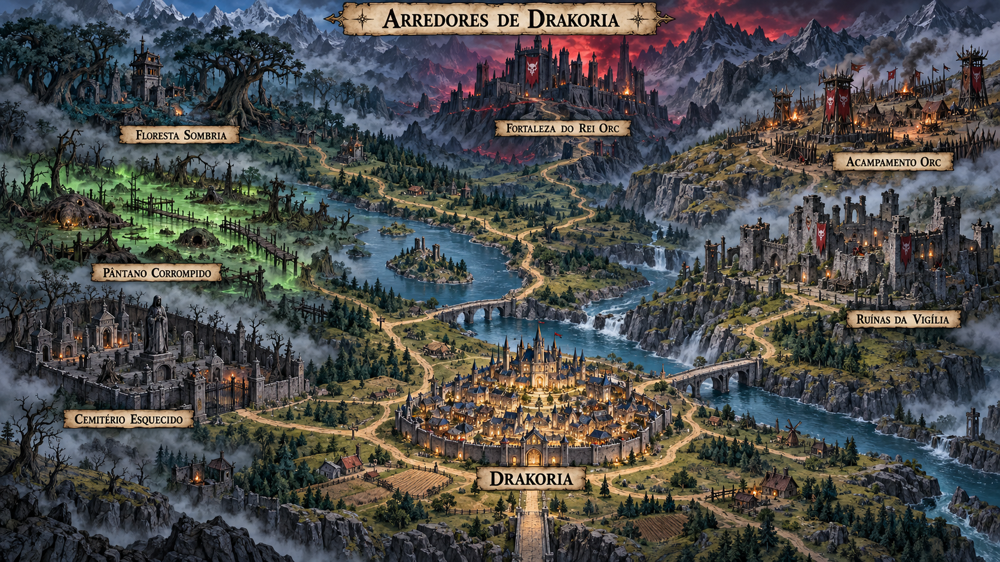

Arredores de Drakoria
Escolha um local no mapa para explorar.
Deslize o mapa para os lados ou escolha um local na lista abaixo.

Drakoria Retornar à praçaExplorar os arredores
Seu HP e mana são mantidos entre os encontros. Volte à praça e descanse na Taberna quando precisar.